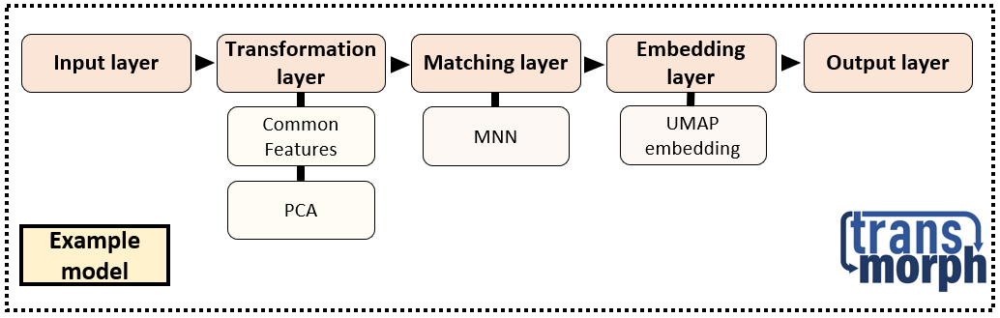

transmorph: a python framework for data integration¶
Note
This project is still in development. Don’t hesitate to drop by our GitHub for any issue encountered! Thank you by advance for your feedback.
Contents¶
transmorph is a python framework dedicated to data integration, with a focus on single-cell applications. Dataset integration describes the problem of embedding two or more datasets together, across different batches or feature spaces, so that similar samples end up close from one another. In transmorph we aim to provide a comprehensive framework to design, apply, report and benchmark data integration models using a system of interactive building blocks supported by statistical and plotting tools. We included pre-built models as well as benchmarking databanks in order to easily set up integration tasks. This package can notably be used in compatibility with scanpy and anndata packages, and works in jupyter notebooks.
The transmorph framework¶
transmorph is a modular framework, where a data integration pipeline is viewed as a network of small algorithms. This architecture allows to separate structural units (layers) from computational units (algorithms), which greatly improves framework expression power and robustness. It also allows to benchmark internal pipeline states, improving interpretability and helping users to choose between the different algorithms. It eventually provides sound dataflow properties, with heavier data objects handled by layers, while computational modules only manipulate low-level objects. A network can be packaged into a model, in order to be readily usable in any data analysis pipeline, improving reproducibility of analyses carried out in our framework. Here is an example of a pre-built integration pipeline, EmbedMNN used in several applications.
As we can see, this model is composed by a few algorithmic blocks: two preprocessing algorithms (common features embedding into PCA representation), one matching algorithm (mutual nearest neighbors) and one embedding algorithm (UMAP graph embedding). This sequence of algorithms is then encapsulated into a model. This shows how transmorph can be used to easily setup a data integration pipeline to embed multi-sources datasets into a common features space. We can apply this model on a challenging single-cell example (approx. 60,000 total cells of 8 different types, from 14 different sources). The integration can be ran efficiently on a simple laptop (left: before integration, right: after integration).

{kind=link}
{kind=link}
To summarize, the transmorph framework provides a rich model API to design data integration pipelines, supported by analysis and preprocessing tools together with benchmarking datasets.

Contributors¶
Aziz Fouché (main maintainer), Institut Curie Paris, Mines ParisTech , ENS Paris-Saclay
Loïc Chadoutaud, Institut Curie Paris, Mines ParisTech
Andrei Zinovyev, Institut Curie Paris, Mines ParisTech